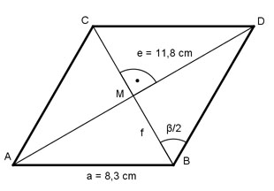

Aufgabe 51 Wie groß ist die Diagonale f der Raute?

Im Dreieck BDM: e/2 11,8/2 cm sin β/2 = ------ = ------------ = 0,7108 a 8,3 cm --> β/2 = 45,3° e/2 tan β/2 = ------ |*f/2 f/2 tan β/2 * f/2 = e/2 |*2 tan β/2 * f = e |:tanβ/2 e 11,8 cm f = ---------- = ----------- = 11,7 cm tan β/2 1,0105